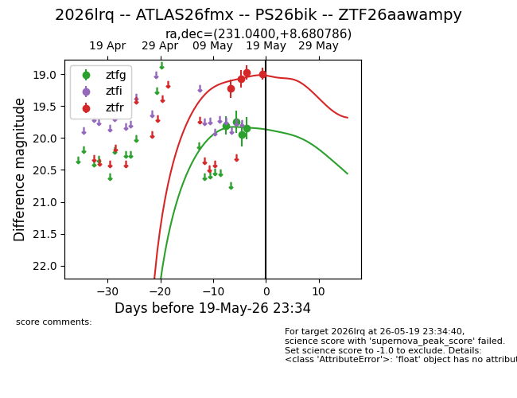
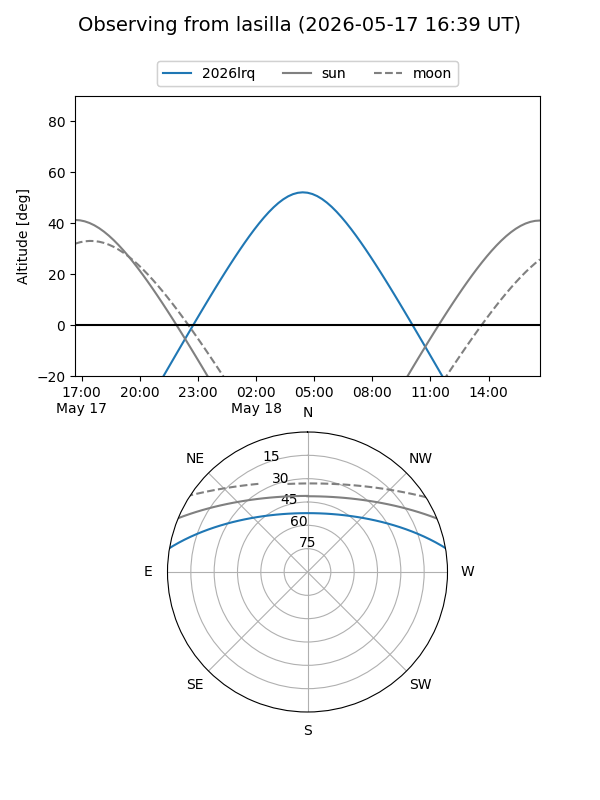
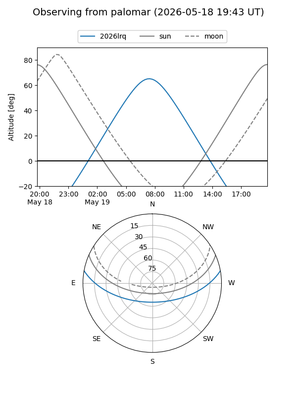
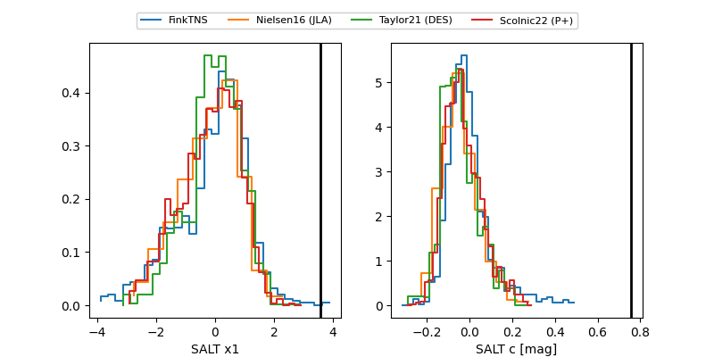

2026lrq
Target 2026lrq at 2026-05-19 23:36
Aliases and brokers:
FINK: link
Lasair: link
ALeRCE: link
TNS: link
YSE: link
alt names
ZTF26aawampy (ztf,fink_ztf)
2026lrq (tns,yse)
ATLAS26fmx (atlas)
PS26bik (panstarrs)
Coordinates:
equatorial (ra, dec) = 231.0400,+8.68079
equatorial (HMS+DMS) = 15:24:09.60,+08:40:50.83
galactic (l, b) = (13.1313,+49.49926)
Flags:
Photometry:
last ztfg=19.84, ztfr=18.99
4 ztfg, 4 ztfr detections
Lightcurve

Visibility


Additional plots
